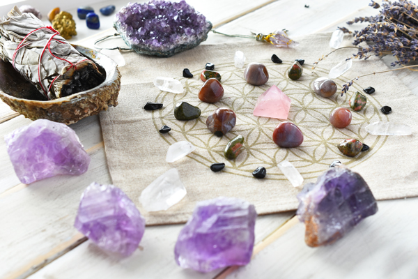

Quartz – Master Healer
August 11 2021,
Dušica Pavlović
CRYSTAL. Healing stones are said to have a positive effect on us and stimulate body and mind. An important healing and precious stone is the rock crystal, which is said to have many good characteristics. Basically, however, it should be mentioned that the effect of healing stones has not yet been scientifically proven.
As clear and pure as fresh, bubbling mountain water. Powerful and energetic like hardly any other gemstone. Mother Earth literally carries the rock crystal in itself, because it also consists of natural raw materials with a particularly high silicon content. Its crystal structure is extraordinary. As extraordinary as its outstanding health-promoting effect, which emanates from the healing stone itself. Due to its construction and its mineral composition, it is able to perfectly intensify concentrated positive energies. That is why it is one of the most important precious and healing stones in the world.
Rock crystal - healing effects on body and soul
As mentioned before, rock crystal is one of the most important healing stones that our nature has to offer. Laypeople, but also professionals agree: the rock crystal healing stone has healing, strengthening and harmonizing powers, which it transfers to its owner when used properly. However, it can only develop its healing powers in a naturally pure form. Every artificial change immediately reduces its healing power - although it can never be completely lost, it can noticeably be weakened. If such a “weakened” gemstone is used for healing, the therapeutic measure must be repeated at least twice as often as with a pure, non-chemically treated stone.
For internal cleansing of the human, but also the animal body (mostly as a drinking cure), only a natural rock crystal healing stone should be placed in well-tempered, carbonic acid-free water as a precaution. “Adulterated stones” not only lose their effectiveness, they can cause lasting negative effects for our health. For allergy sufferers, it is better to ensure that the gemstone has a verifiably high level of purity. Even though allergies against a rock crystal have not documented, they have been against all possible contaminants! The therapy can be seriously questioned if even the smallest addition of harmful substances should trigger an allergy and thus reduce the success of the measure in the long term.
Prerequisite for a successful rock crystal therapy
The healing effect of the rock crystal has a lot to do with body awareness. It is simply not enough to buy this healing stone, look at it once and then put it back in the corner. Anyone who does this, doesn't need to hope for a miracle. Healing effects only appear when you deal thoroughly and consistently with the rock crystal and perceive it as a helping "personality". As strange as it may sound, the stone reacts to being spoken to, touched and positive thoughts. Show it trust, faith, love and confidence, build a trusting relationship with the stone and it will "answer" you - in the form of, for example: pain relief, strengthening and healing process and giving you its protection! The interaction with the forces that are hidden within the stone are only in this way possible and beneficial for our health. This careful effort is absolutely necessary because the rock crystal speaks its very own language. Understanding them is easy only if you let it into your life as a whole. It has so much added value to offer. Open up to it and it will soon be your soul mate!
The rock crystal has following beneficial healing effects:
a) Mental level:
The rock crystal provides constant clarity. It helps with making decisions, gives new strength for those who are discouraged and ensure lasting endurance. The rock crystal also strengthens self-confidence. It frees us from bad thoughts, mood swings, fears, nightmares, trauma, and depression. It harmonizes, restores the natural balance, soothes, provides balance, protects against overload, has a very great relaxing effect, allows us to see and understand better, dispels doubts.
The rock crystal represents the bright light at the end of a long tunnel. It brings us beautiful dreams and gives us invigorating freshness for every new day. Whoever carries this special and personal healing stone, gains self-confidence and develops a great deal of stamina. It brings lucky coincidences and good constellations to our lives. You will soon realize how much you owe him!
b) Physical level:
Physical pain and general discomfort (including psychosomatic complaints), stomach and intestinal problems, circulatory problems, dizziness, tension, chronic irritation, confusion, sadness, weather sensitivity, muscle tenseness. As a savior, the rock crystal is also able to alleviate the side effects of chemotherapy. Women trust in the strength-giving effect of this healing stone, especially during the menopause. Children also find this healing stone soothing. The rock crystal helps even with animal ailments. Animals respond particularly well to gemstone therapy with rock crystal, as these are not necessarily as stubbornly head-controlled - and thus more accessible and open-minded as we humans are.
c) Spiritual and esoteric level:
As already mentioned: the rock crystal healing stone covers many different areas. It influences our subconscious, but also finds an easy access to our superconscious. It also opens the door to a purely spiritual world and, from an esoteric point of view, is a guardian angel, spirit guide and soul mate in one. It fulfils its function as a supernatural spirit which leads us to success and happiness. It can fulfill wishes, dreams and satisfy our longings.
The clear rock crystal lies in front of you and shines in a challenging manner.
How do you react correctly to its speech?
-
The healing stone, which rests carefully in your warm hand and close to your heart, now absorbs your power of thought and your aura, which is still "impure" at this stage.
-
Your senses slowly begin to adjust themselves deeply and deeply to the healing stone. A lot is happening physically and mentally.
-
Stay cool! Make sure that the room is absolutely quiet. Don't let anyone or anything bother you. Soft background music is of course allowed and definitely beneficial!
-
Cleaning and getting to know phase: carefully immerse the newly acquired stone in a glass of non-carbonated water. After this solemn moment, about two hours later, you should finish the water bath and dry your gemstone with a soft cloth. The cleaning is now complete. Next step: the warm-up phase. You should now charge your rock crystal with the energy of light. To do this, the rock crystal is placed in the sun for a short while (this should not exceed two hours! Overheating can damage the rock crystal and significantly reduce its effectiveness).
-
You have decided to use this healing stone for healing purposes. Your wish is to alleviate or even heal muscle tension, nervousness and pain with the rock crystal. Then take your rock crystal firmly "to your chest". You can feel it very close - ideally close to your heart - intensely empathize with its weight, its surface, its temperature, immerse yourself in it, be completely at one with it, the healing stone of your choice!
-
Concentrate on your healing stone (lying down or sitting comfortably) while you continue to gently press it to your heart. Check the lighting conditions. Is it too bright in the room? Then dim the light a little and now close your eyes.
-
The transformation: It begins with a light, barely noticeable one. Continue to be careful and follow the individual work steps of your natural helper. Your rock crystal is currently trying to purify and upgrade the signal received from him, no matter how weak it is, also energy (emanating from you). Imagine this process in your mind's eye. Carefully increase your perceptual abilities and look forward to the reflected effect, namely the pure relaxation and alleviation of your ailments.
Photo credits:
iStockphoto